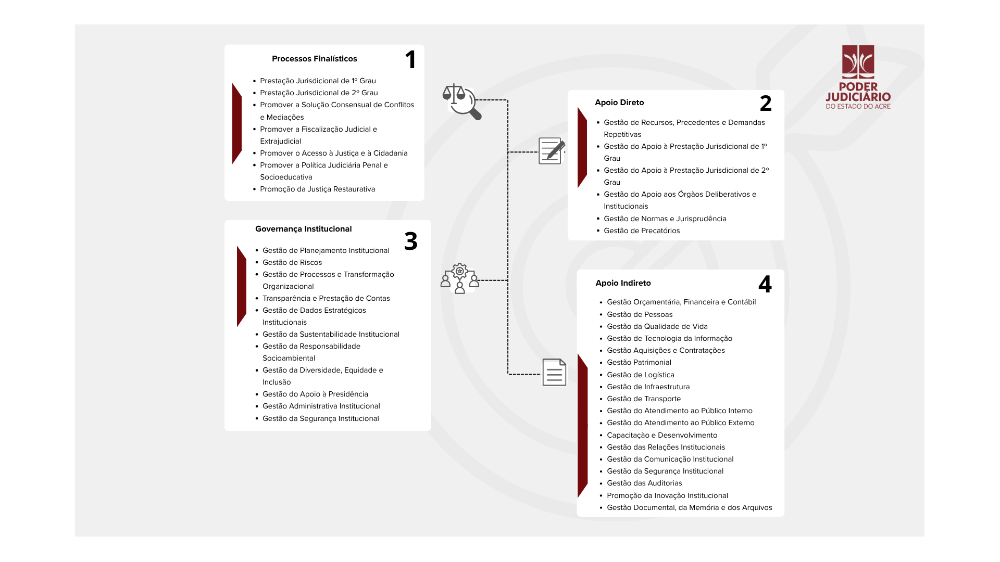

Este portal é o ambiente oficial de Gestão por Processos e Governança do TJAC, em cumprimento à
Resolução CNJ nº 692/2026,
que institui a Estratégia Nacional do Poder Judiciário para o sexênio 2027-2032 e substitui o ciclo anterior da
Resolução CNJ nº 325/2020,
este ambiente reúne a Cadeia de Valor, a Árvore de Macroprocessos e o repositório oficial de Processos de Trabalho.
Consulte fluxogramas, Procedimentos Operacionais Padrão (POPs) e mapeamentos de risco que garantem a padronização e a eficiência da prestação jurisdicional.
Cadeia de Valor - TJAC
A representação visual de como o Tribunal organiza suas atividades operacionais, de apoio e de governança para gerar valor à sociedade.

Árvore de Macroprocessos
A Árvore de Processos é o mapa visual que detalha o funcionamento operacional do Poder Judiciário do Estado do Acre. Ela está estruturada a partir da Cadeia de Valor (representada pelas barras vermelhas abaixo), que organiza as grandes áreas de atuação em atividades finalísticas, de apoio e de governança. Seu propósito é conferir transparência à estrutura do TJAC e facilitar a gestão contínua.
Processos de Trabalho por Unidade
Os processos de trabalho são conjuntos de atividades sequenciais e inter-relacionadas que transformam insumos em entregas de valor. Abaixo, consulte o repositório oficial com os fluxogramas, procedimentos operacionais padrão (POPs) e matrizes de risco de cada unidade.
SEGER
Secretaria-Geral
SEGOV
Secretaria de Governança e Gestão Estratégica
SETIC
Secretaria de Tecnologia da Informação e Comunicação
SEJUD
Secretaria Judiciária
SECOM
Secretaria de Comunicação Social
SEGEP
Secretaria de Gestão de Pessoas
SEGOF
Secretaria de Gestão Orçamentária e Finanças
SEINF
Secretaria de Infraestrutura e Atendimento ao Usuário
SELGA
Secretaria de Logística e Gestão Administrativa
COAPS
Coordenadoria de Apoio aos Programas Sociais
COGEP
Coordenadoria de Gestão de Precatórios
CONJU
Coordenadoria de Normas e Jurisprudência
COPAD
Coordenadoria de Processos Administrativos e Apoio aos Órgãos Deliberativos
COBES
Coordenadoria de Bem-Estar e Saúde
COJUD
Coordenadoria de Atividades da Área Judicial
COEXT
Coordenadoria de Atividades da Área Extrajudicial
COAUX
Coordenadoria de Serviços Auxiliares
COTEC
Coordenadoria de Tecnologia e Gestão de Dados da Atividade Correcional
COPGE
Coordenadoria de Planejamento e Gestão Educacional
COEED
Coordenadoria de Execução Educacional
COMON
Coordenadoria de Controle e Monitoramento
ESJUD
Escola do Poder Judiciário do Acre
OUGER
Ouvidoria Geral
Ouvidoria da Mulher
Comissões, Coordenações e Núcleos Especiais (Presidência)
GACOG
Gabinete da Corregedoria-Geral da Justiça
ASCOR
Assessoria Jurídica da Corregedoria-Geral da Justiça
GAUC
Gabinete dos Juízes Auxiliares da Corregedoria-Geral da Justiça
GABED
Gabinete da Diretoria da Escola do Poder Judiciário
GAPRE
Gabinete da Presidência
GAVIP
Gabinete do Vice-Presidente
ASJUR
Assessoria Jurídica da Presidência
ASVIP
Assessoria Jurídica da Vice-Presidência
AUDIN
Assessoria de Auditoria Interna
ASPEC
Assessoria de Relações Públicas e Cerimonial
INOVA
Assessoria de Transformação e Inovação
GSITJ
Gabinete de Segurança Institucional
CIJAC/CIJEAC
Centro de Inteligência da Justiça Estadual do Acre